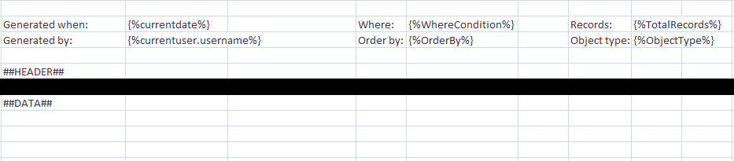
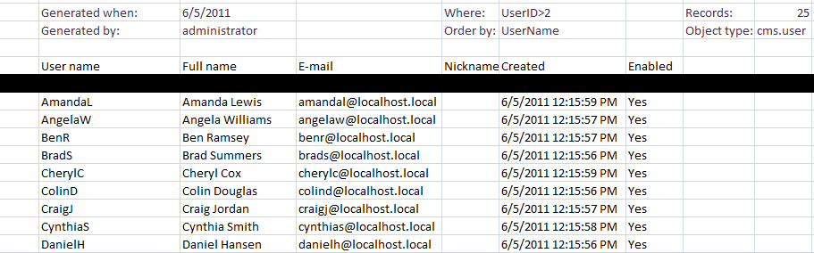
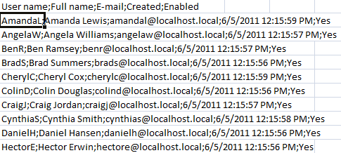
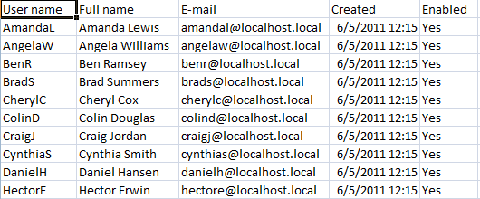
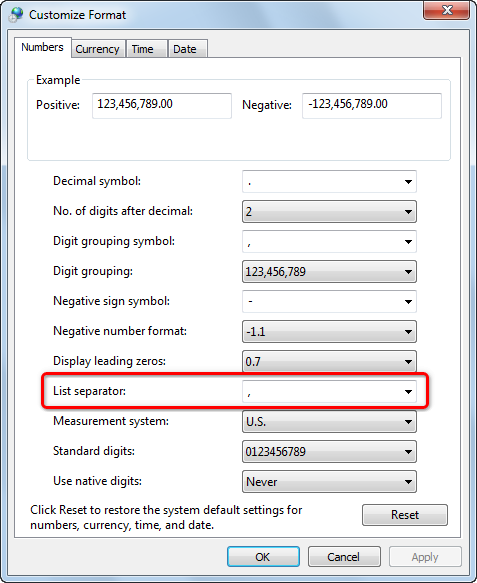

Configuring UI data export
This page explains how to customize the Excel and CSV export for data in the Kentico administration interface:
Customizing Excel export templates
You can customize the default appearance of exported XLSX templates. On each export, the system searches for a Template.xlsx file in the following locations:
~\CMS\App_Data\CMSModules\DataExport\<site code name>\<object type>\Template.xlsx
~\CMS\App_Data\CMSModules\DataExport\<object type>\Template.xlsx
~\CMS\App_Data\CMSModules\DataExport\<site code name>\Template.xlsx
~\CMS\App_Data\CMSModules\DataExport\Template.xlsx
The system searches for the templates according to the listed priorities. This means that when exporting listings of an object type on a specified website, the path stated in 1. is searched first. If the Template.xlsx file is not found there, location 2 is searched and so on. This allows you to add dedicated templates for each object type and website in your system.
The DataExport folder is NOT present under ~\App_Data\CMSModules by default. You need to create the folder and all required subfolders manually to use custom templates.
The <object type> folder name must be identical to the name of the exported file, e.g. cms_user for user listings as the exported file name is cms_user.xlsx (the actual object type name is cms.user, but dots are replaced with underscores in file names).
The <site code name> folders are only searched when exporting site-related objects.
For objects that can be both global (shared among all sites in the system) and site-related, such as roles, we recommend adding the Template.xlsx file to both the site and global folders. Such objects use the global or site-related export template, depending on the selected user interface or the type of the user doing the export (global template for global administrators, site-related template for standard users).
If the Template.xlsx file is not found in any of the locations, the default template is used. The same happens if the template is opened for editing at the time of export or if the current user doesn't have the Read and Write permissions for the template file (on the operating system level).
Custom data export folder
Excel export templates can also be stored in a different location than the default ~\App_Data\CMSModules\DataExport. The custom location can be defined by adding the following key to the AppSettings section of the web.config file:
<add key="CMSDataExportTemplateFolder" value="\\server1\MyDataExportTemplates" />For the value of the key, you can either use a local disk path (for example, C:\MyDataExportTemplates) or a UNC path (for example, \\server1\MyDataExportTemplates). Using a UNC path may be useful in cases when you want to share the same templates between several Kentico instances running on separate servers.
Template format
The template spreadsheet can contain any graphics, text or any other pre‑filled data in it, while the following macros can be used in any cells. On export, the macros are replaced with the actual exported data:
##HEADER## - replaced with the header row. When advanced export is used, it is only replaced if the Export header row option is enabled.
##DATA## - replaced with the actual exported data.
##TABLE## - replaced with both the header row and the exported data.
{%WhereCondition%} - replaced with the WHERE condition used for export (only relevant when exporting via the Advanced export dialog).
{%OrderBy%} - replaced with the ORDER BY expression used to order exported items (either the expression configured in the Advanced export dialog or the default column according to which records are sorted when exporting using the Export to Excel action).
{%TotalRecords%} - replaced with the total number of exported records.
{%ObjectType%} - replaced with the type of exported object (e.g. cms.userlist).
You can also use all standard Context (data) macros the same way as you are used to within Kentico user interface.
So for example, if you create a Template.xlsx file as in the screenshot below and upload it to ~\App_Data\CMSModules\DataExport\cms_user\...

Example of an XLSX template
... the XLSX file with exported users will look as you can see on the following screenshot.

Example of an exported XLSX file
Customizing CSV delimiters
CSV is an abbreviation for Comma-separated values. It is a file format that stores tabular data in text form — each line represents one row of data, while particular values (columns) in each row are separated by a comma (,) or a semicolon (;).
The comma is used as a column delimiter by default if you select the Export to CSV action, while you can choose between the comma and the semicolon in the Advanced export dialog. The choice of the correct delimiter depends on your operating system's regional settings.
If you use an inappropriate delimiter, data from each row will be displayed in a single cell, as the displaying software (for example, Microsoft Excel) will not be able to identify the boundaries between individual values.

Incorrect CSV delimiters
If an appropriate delimiter is used, data from each column will be displayed in individual cells as expected.

Correct CSV delimiters
Delimiter settings on operating system level
To find out which delimiter you should use in your environment or to configure your system to use the other one than the one currently used:
Go to Start menu -> Control Panel in Windows.
Open the Clock, Language, and Region settings category.
Click the Region and Language category.
The Region and Language dialog opens on the Formats tab.
Click Additional settings....
The Customize Format dialog opens on the Numbers tab.
Here you can choose the delimiter in the List separator field.
The separator chosen here is the one that you should use when exporting listings data in order to get it displayed correctly.
If you made any changes, click OK in the Customize format dialog and also click OK in the Region and Language dialog.